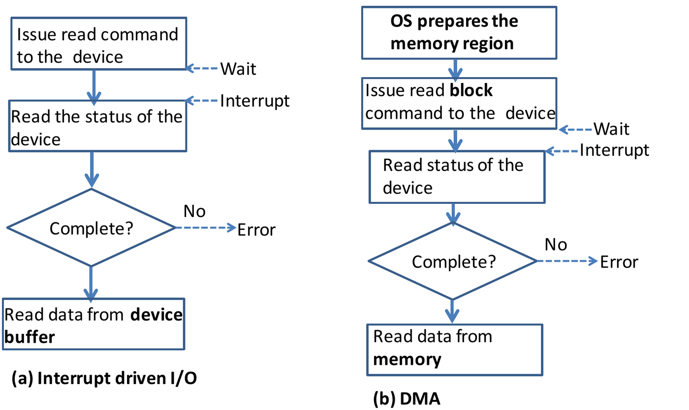
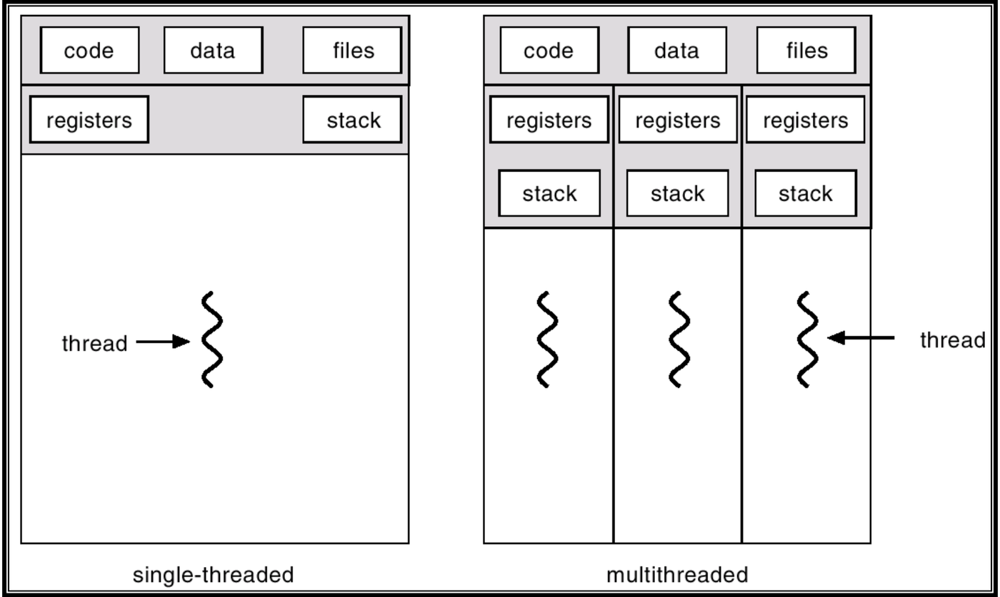
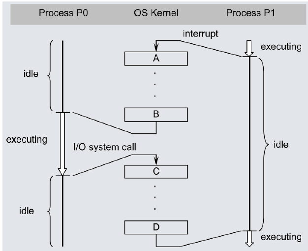
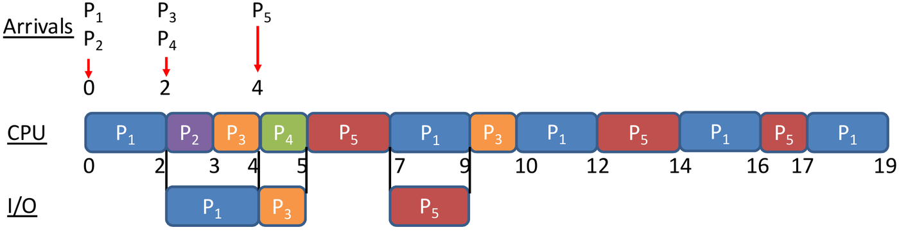
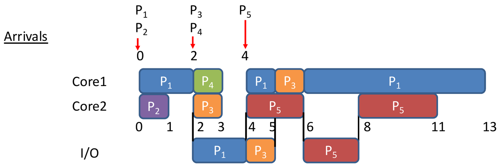
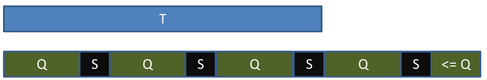

Tutorial 1: Overview of Operating Systems
Q1. Computer system operation
Review the following concepts on Computer System Operation, and explain how they are related to Operating Systems.
- Computer Organization
Answer (a)

- What is a device controller? A device controller is in charge of the operations for one type of device. It has a local buffer.
- How do the devices and the CPU communicate? Through a shared system bus.
- How does a device tell the CPU that an I/O operation is done? It sends an interrupt.
The CPU and the controllers work at the same time. The OS starts an operation, runs other work, and gets an interrupt when the controller finishes.
- Interrupts
Answer (b)
Why do we say that “operating systems are interrupt driven”? The OS runs only when an interrupt or a trap occurs. If there are no interrupts, the OS does not execute: it stays idle.
The major steps of interrupt handling:
- The OS saves the state of the current execution.
- It finds the interrupt service routine (ISR) for the interrupt type.
- It executes the ISR.
- I/O Structure: Interrupt-Driven Data Transfer, Direct Memory Access (DMA) Data Transfer
Answer (c)

| (a) Interrupt-driven I/O | (b) DMA |
|---|---|
| Issue read command → wait → interrupt → read status → read data from the device buffer | OS prepares the memory region → issue read block command → wait → interrupt → read status → read data from memory |
| Small-size I/O | Block-based I/O |
| More interrupts | Fewer interrupts |
| Low-speed devices | High-speed devices |
General method: follow one I/O request from start to end
Most questions on this topic ask about one step of the same chain. If you can recite the chain, you can place any step in it.
- A user program calls a system call, for example
read(). This is a trap. The hardware switches to kernel mode. - The OS checks the request and tells the device controller what to do. (For DMA, it also gives the controller the memory address and the number of bytes.)
- The OS puts the program in the waiting state and runs another program.
- The controller moves the data. Interrupt-driven I/O sends an interrupt for each small unit, and the CPU copies each unit. DMA moves the whole block into memory and sends one interrupt at the end.
- On each interrupt, the OS saves the state, finds the ISR by the interrupt type, and runs it.
- When the data is complete, the OS moves the program from waiting to ready.
To choose between the two methods, count the interrupts. For a transfer of bytes:
| Method | Interrupts | Use it for |
|---|---|---|
| Interrupt-driven I/O, one byte each | Slow devices, small transfers | |
| DMA, block size | Fast devices, large transfers |
Extension 1.1. A program reads a 64 KB file from a disk. The disk controller uses DMA with a block size of 4 KB. How many interrupts does the CPU handle for the data transfer? How many would it handle if the controller used interrupt-driven I/O, one byte for each interrupt? Is the requesting program in the running state while the data moves?
Answer (Extension 1.1)
- DMA: blocks, so 16 interrupts.
- Interrupt-driven I/O: bytes, so 65,536 interrupts.
- No. In both methods, the requesting program is in the waiting state during the transfer, and the CPU runs another program. The methods differ only in how often the CPU must stop to handle an interrupt.
Q2. True or false
Indicate whether the following statements are true or false. Justify your answers.
- All I/O instructions are privileged instructions.
True. I/O operations must go through the OS, so that the OS can make sure that they are correct and legal. A user program that runs an I/O instruction itself causes a trap.
- Given a base register value of 0x1000 and a limit register value of
0x1000, access to memory location 0x1FFF will generate a trap.
False. For memory protection, each access must be in the range . Here that range is . So the access to 0x1FFF is legal and does not trap. An access to 0x2000 would trap.
- Popular operating systems for personal computer use (such as Windows
and Linux) are real-time systems.
False. These systems are usually time-sharing systems. A real-time system must meet deadlines. Windows and Linux do not guarantee deadlines.
- A system call always generates a trap.
True. At a system call, the hardware generates a trap and switches from user mode to kernel mode. The kernel then finds and executes the matching system-call function.
The reverse is not true: not every trap is a system call. An error, such as a division by zero, also causes a trap.
General method: protection questions
Memory protection. The legal addresses are
The first illegal address above the range is exactly . Questions usually test the two addresses at the edge: is legal, and traps.
Which instructions are privileged? An instruction is privileged if a user program could use it to take control away from the OS or to reach another program’s data. The lecture’s examples:
- I/O instructions.
- The instructions that load the base and limit registers.
- The instruction that disables interrupts.
What causes a trap? Two things: a request (a system call) and an error (for example a division by zero, an illegal address, or a privileged instruction in user mode). Every system call is a trap. Not every trap is a system call.
How does the mode change? User → kernel happens only through the hardware, on an interrupt or a trap. Kernel → user happens when the OS sets the mode bit before it returns to the program.
Extension 2.1. A process has base register 0x3000 and limit register 0x0400. The process accesses these four addresses: 0x2FFF, 0x3000, 0x33FF and 0x3400. Which accesses cause a trap?
Answer (Extension 2.1)
The legal range is .
| Address | Check | Result |
|---|---|---|
| 0x2FFF | Below the base | Trap |
| 0x3000 | Equal to the base | Legal |
| 0x33FF | Equal to base + limit − 1 | Legal |
| 0x3400 | Equal to base + limit | Trap |
Extension 2.2. True or false: a program that the root (administrator) user runs executes in kernel mode.
Answer (Extension 2.2)
False. Kernel mode and user mode are hardware modes, set by the mode bit. Root is a user account in the OS. A program that root runs still executes in user mode, and it must still use system calls for I/O.
Extension 2.3. A user program must not be able to load the base register. Explain what could go wrong if it could.
Answer (Extension 2.3)
The base and limit registers define the only memory that the program can use. If the program could load the base register, it could move its legal range over the memory of another program or over the OS itself, for example over the interrupt vector. Then it could read or change that memory. So the load instruction must be privileged.
Q3. Multiprogramming vs multiprocessing
Distinguish between multiprogramming and multiprocessing. What were the key motivations for the development of each?
Answer
- Multiprogramming means that more than one program runs concurrently in a computer system, even with a single-core CPU. The goal is to improve CPU utilization: when one program waits for I/O, the CPU runs another.
- Multiprocessing means that programs execute on a computer with more than one processing core. The goal is to increase computing power through parallel hardware.
The official shop analogy. Each customer orders, waits for the food, and then gets it. Customer A buys chicken wings. Customer B buys noodles.
| Multiprogramming shop (one counter) | Multiprocessing shop (two counters) |
|---|---|
| A orders, B orders, A gets food, B gets food. The two orders interleave at one counter. | A orders and gets food at one counter while B orders and gets food at the other counter. |
General method: tell the system types apart
Ask two questions about the system: how many cores does it have, and when does it switch programs?
| Type | Cores | When it switches programs | Goal |
|---|---|---|---|
| Batch | One | Only when a job finishes | Simple operation |
| Multiprogramming | One is enough | When the running program waits for I/O | CPU utilization |
| Time-sharing | One is enough | Often, on a timer, even if no program waits | Fast response for interactive users |
| Multiprocessing | More than one | Programs run in parallel | Computing power |
| Real-time | Any | So that every task meets its deadline | Deadlines |
These are not exclusive. A modern laptop is multiprogrammed, time-shared and multiprocessing at the same time.
Extension 3.1. A single-core computer runs two programs. The OS switches programs only when the running program waits for I/O. Is this system multiprogrammed, time-shared, or both? What would the OS need to do to make it time-shared?
Answer (Extension 3.1)
It is multiprogrammed only. It switches programs to keep the CPU busy during I/O, which is the definition of multiprogramming.
To make it time-shared, the OS must also switch programs often and on a timer, even when no program waits for I/O. Then each interactive user gets a fast response. Time-sharing is multiprogramming plus frequent, timer-driven switches.
Tutorial 2: Processes and Threads
Q1. True or false
Indicate whether the following statements are true or false. Justify your answers.
- A ready process waiting to get access to the CPU is in the “waiting”
state.
False. The process is in the ready state. A process in the waiting state waits for an event or for the completion of an I/O operation, not for the CPU.
- When any hardware interrupt (not a trap) arrives, the process that
is currently in the “running” state (if any), will be moved to the
“ready” state.
True. The running process moves to ready, so that the ISR can execute. After the ISR, the OS selects either the same process or another process from the ready queue.
Note (new): some OS implementations do not change the PCB state to ready while the ISR runs, when the OS knows that the same process will continue after the ISR.
- The “wait()” system call is generally used by a child process to
wait for instructions from a parent process.
False. A parent uses
wait() to wait for a child to finish.
wait() is sometimes called
join() (new), after the
fork-join model: a parent forks several children for
independent computations, then combines their results with
join().
- Message passing based Inter-Process Communication (IPC) consumes
less memory than shared memory based IPC.
False. Message passing uses more memory.

Each message has a copy in the sender, a copy in the kernel and a copy in the receiver. Shared data exists only once.
General method: process state questions
Name the state by what the process waits for.
| The process… | State |
|---|---|
| uses the CPU now | Running |
| waits only for the CPU | Ready |
| waits for I/O or another event | Waiting |
| is being created | New |
| has finished | Terminated |
Name the transition by its cause.
| Transition | Cause |
|---|---|
| New → ready | The OS admits the process |
| Ready → running | The scheduler picks it |
| Running → ready | An interrupt (for example the timer) |
| Running → waiting | It asks for I/O (a system call) or waits for an event |
| Waiting → ready | The I/O or the event finishes |
| Running → terminated | It exits |
Every arrow that leaves waiting goes to ready, never straight to running. A ready process is not running, so it cannot ask for I/O, and ready → waiting is impossible.
IPC memory cost. Count the copies of the data: message passing keeps one copy in the sender, one in the kernel and one in the receiver. Shared memory keeps one copy. In exchange, shared memory needs the processes to synchronize their access themselves.
Extension 1.1. For each of these four transitions, say whether it is possible, and give the cause or the reason: waiting → running, ready → waiting, new → ready, running → terminated.
Answer (Extension 1.1)
| Transition | Possible? | Cause or reason |
|---|---|---|
| Waiting → running | No | When the event finishes, the process goes to ready first. The scheduler must then pick it. |
| Ready → waiting | No | Only a running process can ask for I/O or wait for an event. |
| New → ready | Yes | The OS admits the new process. |
| Running → terminated | Yes | The process exits. |
Q2. Data vs stack
What are two main differences between the data and stack regions of a process memory?
Answer
- The size of the data region is fixed when the program starts. The stack grows and shrinks as the process executes.
- The data region stores global variables. The stack stores the local variables and the parameters of functions.
General method: where does a variable live?
Ask how long the variable lives and who creates it.
| Region | What it holds | Size | Shared by threads? |
|---|---|---|---|
| Text (code) | The program instructions | Fixed | Yes |
| Data | Global and static variables. They live for the whole program. | Fixed | Yes |
| Heap | Memory that the program allocates while it runs
(malloc, new) |
Grows and shrinks | Yes |
| Stack | Local variables, parameters, return addresses. They live for one function call. | Grows and shrinks | No: each thread has its own stack |
Extension 2.1. Look at this C program. For each of
count, x, p and the memory that
p points to, give the region of process memory where it is
stored.
int count = 0; // count
void f(int x) { // x
int *p = malloc(sizeof(int)); // p, and the memory p points to
*p = x + count;
}Answer (Extension 2.1)
countis a global variable: data.xis a parameter: stack.pis a local variable: stack. The pointer itself lives only during the call.- The integer that
mallocreturns: heap. It stays allocated afterfreturns, until the program frees it.
Q3. Single- vs multi-threaded
Explain the difference between a single-threaded and a multi-threaded process.
Answer

- The threads in a process share the code, data and heap regions. Each thread has its own stack. Each thread also has its own Thread Control Block (TCB), which is similar to a PCB.
- A single-threaded process has only one thread of execution, so it is the same as a process.
- In a multi-threaded process, the threads can execute concurrently, and this increases throughput. When one thread is blocked (waiting), another thread can continue (running).
General method: what is shared and what is private
A thread is one path of execution. It needs only what is necessary to remember where it is:
- Private to each thread: the program counter, the registers, the stack, and the TCB.
- Shared by all threads of one process: the code, the data, the heap, and the open files.
Two consequences follow from this:
- Threads can communicate through global variables with no copy. But they then need synchronization, as in Lecture 4.
- Whether one blocked thread stops the others depends on the mapping model. In many-to-one, all user threads share one kernel thread, so a blocking system call blocks them all. In one-to-one, only the calling thread blocks.
Extension 3.1. A process uses the many-to-one thread
model. One of its user threads calls a blocking read().
What happens to the other threads of the process? Which model avoids
this, and what does that model cost?
Answer (Extension 3.1)
All the user threads block. They share one kernel thread, and the kernel sees only that kernel thread. When it blocks, nothing else of the process can run.
The one-to-one model avoids this, because each user thread has its own kernel thread. The cost is one kernel thread for each user thread: too many kernel threads put a load on the system. The many-to-many model avoids both problems, but the mapping is hard to decide.
Q4. Tracing a context switch
The figure below shows the execution of processes P0 and P1 in a multiprogramming system.
Identify state transitions of each process.
Describe operations A, B, C and D performed by the operating system kernel.

Answer (a) and (b)

(a)
- P0: ready → running (at B). Then running → waiting at the I/O system call. It goes to ready later, after the interrupt that says the I/O is done.
- P1: running → ready (at the interrupt). Then ready → running (at D).
(b)
- A: save the state of P1 into PCB1.
- B: reload the state of P0 from PCB0.
- C: save the state of P0 into PCB0.
- D: reload the state of P1 from PCB1.
Answer: other possible transitions
(new)
- P0: its first transition is ready → running. It could also be waiting → ready → running. The waiting → ready step would happen because of the interrupt in the figure, for example if that interrupt signals the end of an I/O operation that P0 started earlier.
- P1: could its first transition be running → waiting → ready? Only if the “interrupt” in the figure were really an I/O system call (a trap). But then some event would have to move P1 from waiting to ready before it runs again, and the figure shows no such event. So P1’s first transition must be running → ready.
Answer: the exact steps from A to B
(new)
- The interrupt arrives.
- The CPU pauses the running process, switches the hardware to kernel mode, and gives control to the OS.
- The OS saves the context of the running process.
- The OS changes the state of that process from running to ready in its PCB.
- The OS finds and executes the ISR.
- After the ISR, the OS selects the next process from the ready queue.
- The OS changes the state of the new process from ready to running in its PCB.
- The OS switches the hardware to user mode.
- The OS loads the context of the new process.
- The new process starts to run on the CPU.
General method: trace any context-switch figure
- Find each event that stops the running process. An interrupt gives running → ready. A system call that asks for I/O gives running → waiting. An exit gives running → terminated.
- For each gap between two processes, write two operations: save the old process’s state into its PCB, then reload the new process’s state from its PCB.
- Check every waiting process. It can leave the waiting state only through an event that the figure shows, such as an I/O-done interrupt. If the figure shows no such event, the process cannot have been waiting. (new)
- The switch is overhead. It runs in kernel mode, and no user process makes progress during it.
The context-switch overhead as a fraction of CPU time is
Extension 4.1. On a system, a context switch takes 5 µs, and each process runs for 1 ms between two switches. What fraction of CPU time is overhead? In which mode does the context switch run, and why?
Answer (Extension 4.1)
The switch runs in kernel mode. It reads and writes the PCBs, which are in kernel memory, and it changes which process runs. A user process must not be able to do either.
Extension 4.2. Process P2 is running. It calls
read() on a disk. While the disk works, P3 runs. Then the
disk interrupt arrives, and the OS lets P3 continue after the ISR. List
every state transition of P2 and P3, in order, from the
read() call to the moment after the ISR.
Answer (Extension 4.2)
- P2: running → waiting. The
read()system call asks for I/O. - P3: ready → running. The scheduler picks P3.
- The disk interrupt arrives. P3: running → ready, so that the ISR can run.
- The ISR marks P2’s I/O as complete. P2: waiting → ready.
- The scheduler picks P3 again. P3: ready → running.
P2 is now ready, not running. It runs only when the scheduler picks it later.
Other extensions
E1. Which scheduler controls the degree of multiprogramming? The degree of multiprogramming is the number of processes in memory. The OS has three schedulers: the long-term scheduler, the medium-term scheduler and the short-term scheduler. Which of them changes the degree of multiprogramming while the system runs, and how?
Answer (E1)
The medium-term scheduler. When the load is heavy, it swaps partly-run processes out of memory to disk. When the load is light, it swaps them back in.
- The long-term scheduler decides which new jobs to admit. So it sets the degree of multiprogramming at the start.
- The short-term scheduler only picks the next ready process for the CPU.
E2. Direct or indirect message passing? Two processes communicate through a mailbox. Neither process names the other: the sender sends to the mailbox, and the receiver receives from it. Is this direct or indirect communication? The mailbox can hold at most 10 messages. What must the sender do when the mailbox is full, and what must the receiver do when it is empty?
Answer (E2)
It is indirect communication, because the processes do not name each other.
The sender must wait while the mailbox is full. The receiver must wait while the mailbox is empty. This is the producer–consumer pattern with a bounded buffer.
Tutorial 3: CPU Scheduling
Q1. True or false
State whether each of the following statements are true or false. Justify your answers.
- When a new process is admitted in the system, the short-term
scheduler must execute in order to keep the CPU busy.
False. To keep the CPU busy, the short-term scheduler must execute only when a running process terminates or blocks, because only then does the CPU become idle. When a new process is admitted, the scheduler must execute only if no other process is running.
- Partitioned multi-processor scheduling suffers from migration
overheads due to data in private core-specific caches.
False. Migration overheads occur in global scheduling, when a process runs partly on one core and then moves to another core. In partitioned scheduling, processes never move between cores. The problem of partitioned scheduling is instead an unbalanced load on the cores, which depends on how the OS maps processes to cores.
General method: when must the scheduler run, and what does each multi-core approach cost?
The scheduler must run when a core becomes idle. Go through the five transitions:
| Transition | Does the core become idle? | Must the scheduler run? |
|---|---|---|
| Running → waiting (blocks) | Yes | Yes |
| Running → terminated | Yes | Yes |
| Running → ready (interrupt) | No, the process can continue | Only if the algorithm is preemptive |
| Waiting → ready (I/O done) | No | Only if preemptive, or if the core is idle |
| New → ready (admitted) | No | Only if preemptive, or if the core is idle |
Each multi-core approach has one main problem.
| Partitioned | Global | |
|---|---|---|
| Can a process change cores? | No | Yes |
| Main problem | Unbalanced load | Migration overhead and complexity |
A process migrates when it continues on a different core from the one where it stopped. This can happen after a preemption, or after an I/O burst, in global scheduling only.
Extension 1.1. A system uses nonpreemptive SJF on one core. Process P1 is running. Process P2 finishes its I/O and moves to the ready queue. Must the scheduler run now? What changes if the system uses SRTF instead?
Answer (Extension 1.1)
No. P1 still runs, so the core is not idle, and nonpreemptive SJF never takes the CPU from a running process. P2 waits until P1 blocks or terminates.
With SRTF, the scheduler must compare P2’s next CPU burst with P1’s remaining burst. If P2’s burst is shorter, P2 preempts P1.
Extension 1.2. Global nonpreemptive FCFS runs on two cores. Each process has one CPU burst and no I/O. Can a process migrate? What if each process has two CPU bursts with an I/O burst between them?
Answer (Extension 1.2)
- One CPU burst, no I/O: no. A nonpreemptive scheduler never stops a running process, so each process runs from start to end on one core.
- Two CPU bursts with I/O: yes. When the process comes back from I/O, the next free core takes it. That core can be different from the first one. So even a nonpreemptive global scheduler has migration overhead when processes do I/O.
Q2. Gantt charts with I/O
Consider the following set of processes that are using the same I/O device.
| Process | CPU Burst Times | I/O Burst Time | Arrival Time |
|---|---|---|---|
| P1 | 2, 8 | 2 (after first CPU burst) | 0 (order: 1) |
| P2 | 1 | 0 | 0 (order: 2) |
| P3 | 1, 1 | 1 (after first CPU burst) | 2 (order: 1) |
| P4 | 1 | 0 | 2 (order: 2) |
| P5 | 2, 3 | 2 (after first CPU burst) | 4 |
- Draw two Gantt charts illustrating the execution of these processes using:
Round-Robin (quantum = 2) uni-processor scheduling.
Shortest Remaining Time First (SRTF) global multi-processor scheduling with 2 cores.
- What are the turnaround and waiting times of processes for each algorithm?
Concepts: two rules that the official answer uses
(new) The lecture does not state these rules. The official Gantt charts follow them.
- Same-instant queue order. When several processes join the ready queue at the same time, they join in this order: a new process first, then a preempted process, then a process returning from I/O.
- One shared I/O device serves one process at a time. A process that finishes its CPU burst while the device is busy waits in the device queue, in FIFO order.
Answer (a) i: round robin, q = 2

| Time | Event | Ready queue (head first) | Runs |
|---|---|---|---|
| 0 | P1, P2 arrive | P1, P2 | P1 0–2, then I/O 2–4 |
| 2 | P3, P4 arrive | P2, P3, P4 | P2 2–3, done |
| 3 | P3, P4 | P3 3–4, then I/O 4–5 | |
| 4 | P5 new, P1 back from I/O | P4, P5, P1 | P4 4–5, done |
| 5 | P3 back from I/O | P5, P1, P3 | P5 5–7, then I/O 7–9 |
| 7 | P1, P3 | P1 7–9 (6 left) | |
| 9 | P1 preempted, P5 back from I/O | P3, P1, P5 | P3 9–10, done |
| 10 | P1, P5 | P1 10–12 (4 left) | |
| 12 | P1 preempted | P5, P1 | P5 12–14 (1 left) |
| 14 | P5 preempted | P1, P5 | P1 14–16 (2 left) |
| 16 | P1 preempted | P5, P1 | P5 16–17, done |
| 17 | P1 | P1 17–19, done |
A burst that ends before its quantum ends frees the CPU at once (P2 at 3, P3 at 4).
Answer (a) ii: global SRTF, 2 cores

| Time | Event | Decision |
|---|---|---|
| 0 | P1 (2) and P2 (1) arrive | Both run. P2 finishes at 1. Core 2 is idle from 1 to 2. |
| 2 | P1 goes to I/O (2–4). P3 (1) and P4 (1) arrive | Both run from 2 to 3. P4 finishes. |
| 3 | P3’s first burst ends | The device is busy with P1 until 4, so P3’s I/O runs from 4 to 5. |
| 4 | P1 comes back (next burst 8). P5 arrives (2) | Both cores are free: P1 on core 1, P5 on core 2. |
| 5 | P3 comes back (1) | P3 preempts the running process with the longest remaining time, P1 (7 left). P3 runs 5–6 and finishes. |
| 6 | P5 goes to I/O (6–8) | P1 continues from 6 to 13. |
| 8 | P5 comes back (3) | P5 runs 8–11 on core 2. |
SRTF compares the remaining time of the current CPU burst only. When P1 comes back at 4, its time is 8, not 2 + 8.
Answer (b): turnaround and waiting times
- Turnaround = completion time − arrival time.
- Waiting = turnaround − all CPU bursts − time waiting for I/O. The I/O time includes the device-queue time (new). So waiting time counts only the time in the ready queue.

| P1 | P2 | P3 | P4 | P5 | |
|---|---|---|---|---|---|
| RR turnaround | 19 | 3 | 8 | 3 | 13 |
| RR waiting | 7 | 2 | 5 | 2 | 6 |
| SRTF turnaround | 13 | 1 | 4 | 1 | 7 |
| SRTF waiting | 1 | 0 | 0 | 0 | 0 |
Three checks:
- RR P1: .
- RR P5: .
- SRTF P3: .
General method: draw any Gantt chart with I/O
Move from one event time to the next. An event is an arrival, the end of a CPU burst, the end of a quantum, or the end of an I/O burst. At each event time, do these steps in order:
Collect everything that joins the ready queue now. Put the new processes first, then the preempted processes, then the processes back from I/O. (new)
Send each finished CPU burst to the device. If the device is busy, the process waits in the device queue, first come first served.
Give each free core a process by the algorithm’s rule:
Algorithm Picks Preempts? FCFS Head of the queue No RR Head of the queue, for at most Yes, when the quantum ends SJF Shortest current burst No SRTF Shortest current remaining burst Yes, when a shorter burst joins the queue On several cores (global), a new SRTF arrival preempts the running process with the longest remaining time, and only if the new burst is shorter than that time.
Then compute the times for each process:
Check: the waiting time must equal the total length of the gaps where the process sat in the ready queue. Read those gaps off the chart and compare.
Extension 2.1. Round robin, q = 2, one core, one I/O device. Use the same-instant queue order from the official answer. Draw the Gantt chart and give each waiting time.
| Process | Arrival | Bursts |
|---|---|---|
| P3 | 0 | CPU 1, I/O 2, CPU 1 |
| P1 | 1 | CPU 5 |
| P2 | 3 | CPU 1 |
Answer (Extension 2.1)
| Time | Event | Ready queue (head first) | Runs |
|---|---|---|---|
| 0 | P3 arrives | P3 | P3 0–1, then I/O 1–3 |
| 1 | P1 arrives | P1 | P1 1–3 (3 left) |
| 3 | P2 new, P1 preempted, P3 back from I/O | P2, P1, P3 | P2 3–4, done |
| 4 | P1, P3 | P1 4–6 (1 left) | |
| 6 | P1 preempted | P3, P1 | P3 6–7, done |
| 7 | P1 | P1 7–8, done |
- P1: turnaround , waiting .
- P2: turnaround , waiting .
- P3: turnaround , waiting .
At time 3, the three processes join at the same instant. The order new → preempted → back from I/O puts P2 first. A different order would give a different chart.
Extension 2.2. Global SRTF on two cores, no I/O. Draw the schedule, give each waiting time, and say which process migrates.
| Process | Arrival | CPU burst |
|---|---|---|
| P1 | 0 | 6 |
| P2 | 0 | 3 |
| P3 | 1 | 1 |
| P4 | 2 | 2 |
Answer (Extension 2.2)
| Time | Event | Decision |
|---|---|---|
| 0 | P1 (6) and P2 (3) arrive | P1 on core 1, P2 on core 2. |
| 1 | P3 (1) arrives. P1 has 5 left, P2 has 2 left | 1 is shorter than the longest remaining time (5), so P3 preempts P1. P3 runs 1–2 on core 1. |
| 2 | P3 finishes. P4 (2) arrives. Ready: P1 (5), P4 (2) | Core 1 is free. It takes the shorter one, P4: 2–4. |
| 3 | P2 finishes on core 2 | Core 2 takes P1: 3–8. |
Waiting: P1 , P2 , P3 , P4 .
P1 migrates. It starts on core 1 and continues on core 2. This is the migration overhead of global scheduling from Q1(b).
Q3. Reading a schedule backwards
Consider a set of processes P0–P6 with the following arrival times.
| Process | Arrival Time Instant |
|---|---|
| P0, P1, P4, P5, P6 | 0 (order: P0, P1, P4, P5, P6) |
| P2 | 3 |
| P3 | 9 |
A dual-core schedule of these processes is shown in the figure below.

What are the CPU and I/O burst lengths for each process (if there are multiple CPU or I/O bursts for a process, then identify all of them)?
Does the schedule represent partitioned or global multiprocessor scheduling? Identify the scheduling algorithm(s) used in the schedule (select from those covered in the lectures). Justify your answer.
Answer (a)
Written as (CPU, I/O, CPU):
| P0 | P1 | P2 | P3 | P4 | P5 | P6 |
|---|---|---|---|---|---|---|
| 1, 2, 2 | 6 | 1, 2, 1 | 2 | 3, 3, 2 | 2 | 4 |
P2’s CPU burst ends at 5, but its I/O starts at 7, because the device is busy with P4 until 7. The gap from 5 to 7 is device-queue time, not part of a burst.
Answer (b)
More than one answer is possible. Assume that processes join the ready queue in PID order.
Partitioned scheduling, with P1, P5 and P6 on core 2:
- Core 2: it cannot be FCFS or RR, because both would run P1 first. It can be SJF or SRTF.
- Core 1:
- FCFS is not possible. At time 4, P0 and P2 are both ready, and P0 is first in the queue, so P0 should run at 4.
- RR would need a quantum of at least 3, because P4 runs for 3 units without a break. But RR is not possible for the same reason as FCFS.
- SRTF and SJF are both valid. Both generate the schedule shown.
Global scheduling:
- FCFS or RR is not possible, because P1 should run first, in parallel with P0.
- SRTF is not possible, because P2 should preempt P6 (on core 2) at time 3.
- SJF is possible, if SJF orders processes by the length of the current burst. P4’s first burst (3) is shorter than P6’s burst (4), so at time 1, P4 runs before P6.
General method: identify the algorithm from a schedule
Part 1: read the bursts.
- Each block of a process on a core is CPU time. Join the blocks that follow each other with no event between them: together they are one burst.
- Each block on the I/O row is an I/O burst.
- A gap between the end of a CPU burst and the start of that process’s I/O is device-queue time. It is not a burst.
Part 2: partitioned or global?
- If any process runs on two different cores, the schedule is global.
- If every process stays on one core, both are possible. Test each one separately.
Part 3: rule out algorithms by contradiction. For each candidate algorithm, go to each moment where a core chose a process. Ask: “Would this algorithm choose the same process here?” One mismatch rules the algorithm out. (new)
| Algorithm | A sign that rules it out |
|---|---|
| FCFS | A process that arrived later runs first, or a running process stops without blocking |
| RR | A process runs longer than one quantum while others wait, or the queue order is broken |
| SJF | A running process stops without blocking (SJF never preempts), or a longer burst runs while a shorter one waits |
| SRTF | A shorter burst arrives and waits while a longer one keeps running |
Several algorithms can survive. Then each one is a correct answer.
Extension 3.1. One core, no I/O. Three processes arrive as follows: P1 at time 0 (burst 5), P2 at time 1 (burst 2), and P3 at time 3 (burst 1). The schedule is: P1 0–1, P2 1–3, P3 3–4, P1 4–8. Which of FCFS, RR (q = 1 or q = 2), SJF and SRTF produce this schedule?
Answer (Extension 3.1)
Look at time 1 first: P1 stops after 1 unit without blocking, and P2 runs.
- FCFS: no. FCFS never stops a running process. P1 would run 0–5.
- SJF: no. For the same reason: SJF is nonpreemptive.
- RR, q = 2: no. P1 would run 0–2.
- RR, q = 1: no. P1 runs 0–1 and P2 runs 1–2. At 2, P2’s quantum ends, and P2 goes behind P1 in the queue. So P1 should run 2–3, but the schedule shows P2.
- SRTF: yes. At 1, P2 (2) is shorter than P1’s remainder (4), so P2 preempts P1. At 3, P2 finishes. P3 arrives with 1, and P1 has 4, so P3 runs 3–4. Then P1 runs 4–8.
Only SRTF fits.
Q4. CPU efficiency under round robin
Measurements of a certain system have shown that the average process runs for time before blocking on I/O. A process switch requires time , which is effectively wasted (overhead). Define what is meant by CPU efficiency. For round robin scheduling with quantum , give a formula for the CPU efficiency for each of the following cases:
- (b) (c) (d) (e)
Answer
(new) The lecture does not define CPU efficiency.

Three facts from the figure:
- The quanta (green) add up to exactly (blue).
- The switch (black) is not part of and not part of .
- Count the first switch, which starts the process. It is also overhead.
| Case | #Switches | Efficiency |
|---|---|---|
| (a) | 1 | |
| (b) | 1 | |
| (c) | ||
| (d) | ||
| (e) | 0 |
General method: one formula covers every case
- To get an efficiency, find first, then substitute.
- To find the smallest for a target efficiency , solve for first: . Take the largest whole that satisfies it. Then the smallest with is .
- Limits to remember: a large gives one switch and the best efficiency. A equal to wastes about half the CPU. gives efficiency 0.
Extension 4.1. A process runs for ms before it blocks. A switch costs ms. Find the CPU efficiency for ms and for ms.
Answer (Extension 4.1)
- : . Efficiency .
- : , so . Efficiency .
Extension 4.2. A process runs for ms before it blocks. A switch costs ms. What is the smallest quantum that gives a CPU efficiency of at least 80%?
Answer (Extension 4.2)
So at most 3 switches. needs ms. The smallest quantum is 4 ms. Check: gives and . A smaller , for example 3.9 ms, gives and .
Other extensions
E1. The convoy effect. Three processes arrive at time 0 in the order P1, P2, P3. Their CPU bursts are 24, 3 and 3. The scheduler is FCFS. Find the average waiting time. Then find it again for the arrival order P2, P3, P1. What does the difference show?
Answer (E1)
- Order P1, P2, P3: the waits are 0, 24 and 27. The average is .
- Order P2, P3, P1: the waits are 0, 3 and 6. The average is .
This is the convoy effect: short processes wait behind one long process. FCFS is sensitive to the arrival order. SJF puts the short processes first and gives the lowest average waiting time.
E2. Starvation in priority scheduling. A priority scheduler always runs the ready process with the highest priority. High-priority processes keep arriving. What problem can a low-priority process have, and what is the standard fix? Which other algorithm from the lecture has the same problem?
Answer (E2)
The low-priority process can starve: it may never run. The fix is aging. The OS raises the priority of a process the longer it waits, so in the end it becomes the highest priority and runs.
SJF and SRTF have the same problem, because they are priority scheduling with the burst length as the priority. A long process can starve while short ones keep arriving.
E3. The longest wait under round robin. Five processes are in the ready queue of a round-robin scheduler with ms. What is the longest time that a process waits before its next turn? What happens to RR if is larger than every CPU burst?
Answer (E3)
With processes, a process waits at most . Here that is ms.
If is larger than every CPU burst, no process uses up its quantum, and RR becomes FCFS. From that point, a larger no longer changes the average turnaround time. For smaller values of , the average turnaround time has no simple relation to .
E4. Multilevel queue scheduling. A system has a foreground queue (round robin) and a background queue (FCFS). The foreground queue always has a fixed priority over the background queue. What is the risk? What is the alternative way to share the CPU between the queues?
Answer (E4)
The background queue can starve while foreground processes keep arriving.
The alternative is time slices: each queue gets a fixed share of CPU time, for example 80% for the foreground queue and 20% for the background queue.
Tutorial 4: Process Synchronization I
Q1. A broken user-level solution
Consider the following user-level solution to the critical section
problem, where flag and turn are shared
variables initialized to false and 0,
respectively.
// Process P0 // Process P1
while (1) { while (1) {
flag = true; turn = 0;
while (turn == 1); while (flag and turn == 0);
critical-section critical-section
turn = 1; flag = false;
remainder-section remainder-section
} }Determine which of the three requirements are not satisfied, with justifications.
Concepts: the three requirements
A critical section is the part of a process that uses shared data. A correct solution must satisfy three requirements:
- Mutual exclusion. At most one process is in its critical section at any time.
- Progress. If the critical section is free and some processes want to enter, the choice of the next process cannot be postponed forever. In short: if the critical section is free, someone must be able to enter.
- Bounded waiting. After a process asks to enter, the other processes can enter before it only a limited number of times.
The solution may assume nothing about speed: a context switch can occur between any two statements.
Answer: mutual exclusion
Not satisfied. Consider this sequence:
- P1:
turn = 0; - P1:
while (flag and turn == 0);passes, becauseflagis false. - P1 enters its critical section.
- A context switch from P1 to P0 occurs.
- P0:
flag = true; - P0:
while (turn == 1);passes, becauseturnis 0. - P0 enters its critical section.
P0 and P1 are both in the critical section.
Answer: progress
Not satisfied. Consider this sequence:
- P0 executes its loop once. At the end of its critical section,
turnbecomes 1. - P0:
flag = true; - P0:
while (turn == 1);loops forever. Only P1 setsturnback to 0, and P1 may stay in its remainder section.
The critical section is free, but P0 cannot enter. Progress fails for P0.
Answer: bounded waiting
Satisfied. Look at each place where a process can wait:
- P0 waits at
while (turn == 1);. P0 can enter as soon as P1 executes the first statement of its loop,turn = 0. So after P0 asks to enter, P1 can enter its critical section 0 times before P0. - P1 waits at
while (flag and turn == 0);. P1 can enter as soon as P0 executesturn = 1after its critical section. So after P1 asks to enter, P0 can enter its critical section 1 time before P1.
General method: test any user-level solution
To show that a requirement fails, give one sequence of statements, with the context switches marked, that breaks it. To show that a requirement holds, argue for every case.
Mutual exclusion. Try to put both processes inside:
- Let one process pass its entry loop and enter. Switch.
- Run the other process from the start of its loop. Is its loop condition false now? If yes, it enters too, and mutual exclusion fails.
- Try both orders (P0 first and P1 first). Also try a switch inside the entry section, between two statements.
Progress. Look for a state where the critical section is free, but a waiting process’s loop condition stays true forever. There are two usual causes:
- Only the other process can change the variable, and
that process stays in its remainder section. (Q1: only P1 resets
turn.) - Both processes wait for each other. Each one has set a variable that blocks the other.
Bounded waiting. For each entry loop, ask: “After this process starts to wait, how many times can the other process enter before this loop condition becomes false?” If the count is finite for every loop, bounded waiting holds.
The three requirements are independent. Q1 fails mutual exclusion and progress, but satisfies bounded waiting. Check each requirement on its own.
Extension 1.1. Algorithm 1 uses only a shared
variable turn, which starts at 0. Which requirements does
it satisfy?
// Process Pi (k is the other process)
while (1) {
while (turn != i); // wait for my turn
critical section
turn = k; // give the turn away
remainder section
}Answer (Extension 1.1)
- Mutual exclusion: yes.
turnhas one value at a time, so only one process passes its loop. - Progress: no. Suppose
turn = 0and P0 stays in its remainder section. P1 wants to enter, but its loop waits until P0 gives the turn away. The critical section is free, and P1 cannot enter. (This is the “only the other process can change the variable” pattern.) - Bounded waiting: yes. The processes strictly take turns. The other process can enter at most once before a waiting process.
Extension 1.2. Algorithm 2 uses a shared array
flag[2], which starts as {false, false}. Give
a sequence that breaks progress.
// Process Pi (k is the other process)
while (1) {
flag[i] = true; // I want to enter
while (flag[k]); // wait while the other wants to enter
critical section
flag[i] = false;
remainder section
}Answer (Extension 1.2)
- P0:
flag[0] = true;A context switch occurs. - P1:
flag[1] = true; - P1:
while (flag[0]);loops, becauseflag[0]is true. - P0:
while (flag[1]);loops, becauseflag[1]is true.
Each process waits for the other one’s flag forever, and neither is inside. Progress fails. This is the “both processes wait for each other” pattern.
Extension 1.3. Peterson’s solution combines the two
ideas. flag[2] starts as {false, false}, and
turn can start at 0 or 1. Both processes reach the
while statement at the same time. Which process enters?
Which requirements does the solution satisfy?
// Process Pi (k is the other process)
while (1) {
flag[i] = true;
turn = k; // give the turn to the other process
while (flag[k] && turn == k);
critical section
flag[i] = false;
remainder section
}Answer (Extension 1.3)
The process that wrote turn first
enters. Each process gives the turn to the other, so the last write
decides: the process that wrote last gave the turn away, and it
waits.
Peterson’s solution satisfies all three requirements, but only for two processes:
- Mutual exclusion:
turnhas one value, so at most one loop condition is false when both flags are true. - Progress: a process waits only if the other process wants to enter and has the turn. If the other process stays in its remainder section, its flag is false.
- Bounded waiting: a waiting process waits for at most one entry of the other process. On its next entry, the other process gives the turn back.
Q2. True or false
Indicate whether the following statements are true or false. Justify your answers.
- Mutual exclusion can be achieved by disabling interrupts during the
critical section.
True. When interrupts are disabled, no other process, and not even the OS, can run during the critical section.
This works on one CPU only. On a multiprocessor, the other CPUs keep running, so the same statement about a multiprocessor is false. Also, disabling interrupts is a privileged instruction.
- If a solution to a critical section problem satisfies progress, then
it also satisfies bounded waiting.
False. A solution that always favours a process P0
over another process P1 can satisfy progress and still break bounded
waiting for P1. An example, with flag initialized to
false and timeout set to a large value:
// Process P0 // Process P1
while (flag); while (flag) { wait(timeout); }
flag = true; flag = true;
critical section; critical section;
flag = false; flag = false;- Progress holds. When
flagis false, a waiting process can enter. - Bounded waiting fails for P1. P1 checks
flagagain only after a longtimeout, but P0 checks it all the time. So P0 can enter again and again while P1 sleeps.
General method: mechanisms and the requirements they give
Which mechanism gives which requirement?
| Mechanism | Mutual exclusion | Progress | Bounded waiting | Limits |
|---|---|---|---|---|
Algorithm 1 (turn) |
Yes | No | Yes | Two processes |
Algorithm 2 (flag) |
Yes | No | Yes | Two processes |
| Peterson | Yes | Yes | Yes | Two processes |
| TestAndSet lock | Yes | Yes | No | Spins (busy waiting) |
| Blocking semaphore, FIFO list | Yes | Yes | Yes | Needs atomic Wait and Signal |
“Does requirement X imply requirement Y?” The answer is always no. To prove it, give one solution that has X and not Y:
- Progress without bounded waiting: the “favour P0” solution above, or the TestAndSet lock.
- Bounded waiting without progress: Q1, or Algorithm 1.
- Mutual exclusion without progress: Algorithm 1 or 2.
Extension 2.1. True or false: if a solution to the critical-section problem satisfies bounded waiting, then it also satisfies progress.
Answer (Extension 2.1)
False. The solution in Q1 is a counter-example. It
satisfies bounded waiting (P1 enters 0 times before a waiting P0, and P0
enters at most 1 time before a waiting P1). But it fails progress: after
P0 sets turn = 1, P0 can wait forever while P1 stays in its
remainder section.
Extension 2.2. True or false: on a computer with four cores, a process can make its critical section safe by disabling interrupts before it enters and enabling them after it leaves.
Answer (Extension 2.2)
False. Disabling interrupts stops only the core that runs the instruction. The other three cores keep running, and a process on one of them can enter the same critical section. Also, a user process cannot disable interrupts, because the instruction is privileged.
Q3. A wrong TestAndSet
Consider the following implementation of
TestAndSet().
boolean TestAndSet (boolean *target) {
boolean rv = *target;
*target = false;
return rv;
}Consider the following hardware-level solution to the critical
section problem, where the code for a process Pi (i = 0 or 1) is shown.
lock is a Boolean variable. The initial value of
lock = True.
// Process Pi:
while (1) {
while (TestAndSet(&lock) == false);
critical-section
lock = false;
remainder-section
}Does this solution satisfy the properties of mutual exclusion and progress? Justify your answers.
Concepts: the correct TestAndSet lock
The lecture’s TestAndSet reads a variable and sets it to
true, as one atomic step. No context
switch can occur inside it.
boolean TestAndSet(boolean *target) {
boolean rv = *target;
*target = true;
return rv;
}
// lock starts as false (free)
while (TestAndSet(&lock)) ; // entry: loop while the old value was true (taken)
critical section
lock = false; // exit: free the lockHere false means free and true means taken.
Only the process that changes lock from false to true gets
the old value false, and only that process enters.
Answer
This TestAndSet sets the target to
false, and the lock starts as true. So
here true means free and false means
taken.
- Mutual exclusion: satisfied. When one process
enters the critical section,
lockbecomes false. The other process’sTestAndSetthen returns false, so it keeps looping and cannot enter. - Progress: not satisfied. After a process executes
its critical section, the exit section sets
lock = false. This means “taken”, so the critical section stays locked. The other process waits forever to enter. (The exit section should setlock = true.)
General method: check any lock
- Find the “free” value. It is the value for which the entry loop lets a process pass.
- Check the entry. When a process passes, the same atomic step must change the lock to “taken”.
- Check the start value. It must be “free”. If it is “taken”, nobody ever enters.
- Check the exit. It must set the lock back to “free”.
| Mistake | Requirement that fails |
|---|---|
| The check and the change are two separate steps | Mutual exclusion: two processes can both see “free” |
| The start value is “taken” | Progress: nobody ever enters |
| The exit does not restore “free” | Progress: after the first entry, nobody enters again |
| (Even a correct TestAndSet lock) | Bounded waiting: a process can lose the race every time |
Extension 3.1. Take the correct lecture version:
TestAndSet sets the target to true, the entry
is while (TestAndSet(&lock));, and the exit is
lock = false;. But a programmer initializes
lock to true. Which requirement fails?
Answer (Extension 3.1)
Progress. true means taken. Every
TestAndSet returns true, so every process
loops forever, although no process is in the critical section. Mutual
exclusion holds, but only because nobody ever enters.
Extension 3.2. The correct TestAndSet lock satisfies mutual exclusion and progress. Explain why it does not satisfy bounded waiting. Use round-robin scheduling in your explanation.
Answer (Extension 3.2)
Suppose that every time P0’s quantum ends, P0 is inside its critical section:
- P0 holds the lock when its quantum ends.
- P1 runs. It finds
lock = trueand spins for its whole quantum. - P0 runs again. It leaves the critical section, loops, and takes the lock again before its quantum ends.
This can repeat forever, and P1 never enters. Nothing in the lock makes P0 wait for P1, so the number of times P0 can enter before P1 has no limit.
Other extensions
E1. A race condition on a counter. A shared variable
counter starts at 5. Process A runs counter++
and process B runs counter-- at the same time. In machine
code, each operation is three steps: read counter into a
register, change the register, and write the register back. What final
values of counter are possible?
Answer (E1)
4, 5 or 6.
- 5: one process finishes all three steps before the other reads.
- 6: both read 5. B writes 4 first, then A writes 6. The last write wins.
- 4: both read 5. A writes 6 first, then B writes 4.
The result depends on the order of the steps. This is a race
condition, and it is the reason that counter++
must be inside a critical section.
E2. Busy waiting or blocking? A process that waits for a lock can spin in a loop (busy waiting) or sleep until another process wakes it (blocking). When is busy waiting the better choice?
Answer (E2)
When critical sections are short. Blocking needs two context switches (to sleep and to wake up). If the lock becomes free in less time than those switches take, a short spin wastes less CPU time than blocking.
Tutorial 5: Process Synchronization II
Q1. Apples and oranges
Alice is playing a game that involves pairing apples with oranges. The game produces apples and oranges in separate baskets at random instants. For Alice to get points, she must pair exactly 1 apple with 2 oranges by picking them from the respective baskets. Each basket is protected by a semaphore; A for the apple basket and O for the orange basket. To access a basket, Alice must first acquire the corresponding semaphore.
Complete the code in the below figure to help Alice to play this
game. You should only use the operations Wait(A),
Wait(O), Signal(A) and Signal(O)
in the boxes provided. You may use any number of these operations
(including zero) in each of the boxes. Your solution must be
deadlock-free even in the presence of other players who may be executing
a different code.
[ Box 1 ]
// Pick 1 apple
[ Box 2 ]
If (atleast 2 oranges in basket) {
** Pick 2 oranges and pair with apple. **
[ Box 3 ]
} else {
[ Box 4 ]
** Drop 1 apple back in basket **
[ Box 5 ]
}Concepts: how two semaphores deadlock
A process holds a semaphore from its
Wait to its Signal. A deadlock with two
semaphores needs two processes that take them in opposite
orders:
// P0 // P1
Wait(S); Wait(Q);
Wait(Q); Wait(S); // each holds one and waits for the otherIf P0 takes S and P1 takes Q before either takes its second semaphore, each process waits forever for the semaphore that the other holds.
Answer
Wait(A) // Box 1
// Pick 1 apple
Signal(A) // Box 2
Wait(O)
If (atleast 2 oranges in basket) {
** Pick 2 oranges and pair with apple. **
Signal(O) // Box 3
} else {
Signal(O) // Box 4
Wait(A)
** Drop 1 apple back in basket **
Signal(A) // Box 5
}- Acquire A, pick an apple, and release A.
- Acquire O. If there are at least 2 oranges, pick them and release O.
- Otherwise, release O, acquire A again, drop the apple back, and release A.
There is no deadlock, because Alice never holds both semaphores at the same time (no nesting). If Alice held A while she waited for O, another player who takes O and then A could deadlock with her.
General method: deadlock-free code with several semaphores
(new) The lecture shows the deadlock. These are the two standard ways to avoid it.
Rule 1: no nesting. Hold a semaphore only while you
touch its resource. Release it before you call Wait on
another semaphore. Then a process never holds one semaphore while it
waits for another, so no deadlock is possible. This rule is safe
whatever the other processes do. That is why the
question, which allows “other players who may be executing a different
code”, needs it.
Rule 2: one global order. If a process must hold two semaphores at the same time, every process must acquire them in the same order (for example always A before O). Then no circle of waiting can form. This rule works only if all the code follows it.
To check a given solution, look at every
Wait. Ask: “Does this process hold another semaphore at
this point?” If yes, find a second process that takes the two semaphores
in the opposite order. If such a process can exist, the solution can
deadlock.
Extension 1.1. Bob writes his own code for the same game. Another player, Carol, uses code that takes O before A. Can Bob and Carol deadlock? If yes, give the sequence.
// Bob // Carol
Wait(A) Wait(O)
// Pick 1 apple // Pick 1 orange
Wait(O) Wait(A)
// Pick 2 oranges // Pick 1 apple
Signal(O) Signal(A)
Signal(A) Signal(O)Answer (Extension 1.1)
Yes. Bob holds A while he waits for O, and Carol holds O while she waits for A.
- Bob:
Wait(A). A becomes 0. A context switch occurs. - Carol:
Wait(O). O becomes 0. - Carol:
Wait(A). She blocks, because Bob holds A. - Bob:
Wait(O). He blocks, because Carol holds O.
Each waits for the semaphore that the other holds. The fix is Rule 1:
Bob releases A before he calls Wait(O), as in the official
answer.
Extension 1.2. The game changes. A player must now hold both baskets at the same time while pairing, so the no-nesting rule cannot be used. Every player’s code is under your control. How do you make the game deadlock-free?
Answer (Extension 1.2)
Use Rule 2: every player acquires the semaphores in the same
order, for example Wait(A) and then
Wait(O).
Wait(A)
Wait(O)
// pick 1 apple and 2 oranges
Signal(O)
Signal(A)A deadlock needs one player who holds O and waits for A. With this
order, a player who holds O already holds A, so that never happens. The
order of the Signals does not matter, because
Signal never blocks.
Q2. A shifted semaphore
Consider the following implementations of the system calls
Wait() and Signal().
Wait (Semaphore S) Signal (Semaphore S)
{ {
S.value--; S.value++;
If (S.value < -1) { If (S.value <= 0) {
block(); wakeup();
} }
} }Suppose these system calls are guaranteed to be atomic and a
Semaphore S in this system is used to protect critical
sections as shown below. Assume S is initialized to 0.
Explain if this solution ensures mutual exclusion and progress with
justifications?
// Process Pi:
While (1)
{
Wait(S);
Critical-section for Pi
Signal(S);
Remainder-section for Pi
}Concepts: the standard blocking semaphore
The lecture’s version, used as a lock with start value 1:
Wait(S): Signal(S):
S.value--; S.value++;
if (S.value < 0) if (S.value <= 0)
block(); wakeup(P); // P is a process from S.LWhat each value means:
S.value |
Meaning |
|---|---|
| 1 | Free |
| 0 | One process inside, none waiting |
One process inside,
processes waiting in list S.L |
Signal uses <= 0 because a value of 0 or
less after the increment means that at least one
process was waiting before it. So Signal
must wake one.
Answer
Write down what each value of S means in this version:
S.value |
Meaning |
|---|---|
| 0 | Free |
| −1 | One process inside, none waiting |
| One process inside, processes waiting |
This is the standard semaphore shifted down by 1, and the block test is shifted down by 1 too.
Mutual exclusion: satisfied.
- The first process calls
Wait. S goes from 0 to −1. The test−1 < −1is false, so it does not block, and it enters. - Slide error: the official slide says S “becomes 1”. From 0,
one
Waitgives 0 − 1 = −1. - Any other process that calls
Waitnow takes S to −2 or lower. The test is true, so it blocks. No second process can enter until the first one callsSignal. WaitandSignalalways run in pairs, in that order, and S starts at 0. So S can never become greater than 0. No extra process can ever pass.
Progress: satisfied.
- If processes are blocked, S is −2 or lower before
Signal. AfterS.value++, it is −1 or lower, which passes the test<= 0. SoSignalwakes one of them. - If no process is blocked, S goes from −1 to 0. The test
0 <= 0is true, soSignalcalls an unnecessarywakeup()although nobody waits. This does no harm. - So a process is never left blocked while the semaphore is free (S = 0).
General method: check any changed semaphore in three numbers
(new) This works for any Wait that decrements
before it checks, used as
Wait(S); critical section; Signal(S);.
Read three numbers from the code:
- I is the start value of S.
- B is the number in Wait’s block test, written as
S.value < B. If the code saysS.value <= b, then B = b + 1. - W is the number in Signal’s wakeup test, written as
S.value <= W. If the code saysS.value < w, then W = w − 1.
Then do two checks:
- I − B = 1 means that mutual exclusion is OK. I − B
is the number of processes that can pass
Waitwithout blocking. If it is more than 1, too many processes enter. If it is 0 or less, every process blocks, and progress fails. - W ≥ B means that progress is OK. After the
increment, a value of B or less means that someone was waiting. The
wakeup test must be true for all those values. If W is smaller than B, a
waiting process can miss its wakeup and stay blocked. If W is larger
than B,
Signalsometimes wakes nobody, which is harmless.
If both checks pass, the semaphore is correct.
| I | B | W | I − B | W ≥ B? | Result | |
|---|---|---|---|---|---|---|
| This question | 0 | −1 | 0 | 1 | Yes (0 ≥ −1) | Correct, with an extra wakeup at S = 0 |
| The standard semaphore | 1 | 0 | 0 | 1 | Yes (0 ≥ 0) | Correct |
For a counting semaphore that allows processes in at once, the first check becomes I − B = .
Extension 2.1. The semaphore is shifted
up instead. S is initialized to 2, and the processes
use Wait(S); critical section; Signal(S);. Does this ensure
mutual exclusion and progress?
Wait (Semaphore S) Signal (Semaphore S)
{ {
S.value--; S.value++;
If (S.value < 1) { If (S.value <= 1) {
block(); wakeup();
} }
} }Answer (Extension 2.1)
I = 2, B = 1, W = 1.
- I − B = 2 − 1 = 1, so mutual exclusion holds. The
first
Waittakes S from 2 to 1. The test1 < 1is false, and the process enters. The nextWaittakes S to 0, and that process blocks. - W ≥ B (1 ≥ 1), so progress holds. Here W = B
exactly, so there is no extra wakeup: S goes from 1 to 2 only when
nobody waits, and the test
2 <= 1is false.
The meanings are: 2 = free, 1 = one inside, = one inside and waiting.
Extension 2.2. Keep the code of Q2 exactly, but initialize S to 1 instead of 0. Does this ensure mutual exclusion? Give a sequence if it does not.
Answer (Extension 2.2)
I = 1, B = −1. I − B = 2, so two processes can enter. Mutual exclusion fails.
- P0:
Wait(S). S goes from 1 to 0. The test0 < −1is false. P0 enters. - P1:
Wait(S). S goes from 0 to −1. The test−1 < −1is false. P1 enters.
P0 and P1 are both in the critical section. A third process would take S to −2 and block.
Extension 2.3. The lecture’s Wait is
unchanged, but Signal uses < instead of
<=. S is initialized to 1. Does this ensure progress?
Give a sequence if it does not.
Wait (Semaphore S) Signal (Semaphore S)
{ {
S.value--; S.value++;
If (S.value < 0) { If (S.value < 0) {
block(); wakeup();
} }
} }Answer (Extension 2.3)
I = 1, B = 0, and S.value < 0 means W = −1. I − B =
1, so mutual exclusion holds. But W < B (−1 < 0), so
progress fails.
- P0:
Wait(S). S goes from 1 to 0. P0 enters. - P1:
Wait(S). S goes from 0 to −1. P1 blocks. - P0:
Signal(S). S goes from −1 to 0. The test0 < 0is false, so P0 wakes nobody.
Now S = 0, which this code reads as “one process inside”. But nobody
is inside, and P1 stays blocked. If a third process calls
Wait, S becomes −1 and it blocks too. Signal
misses its wakeup every time that exactly one process waits.
Extension 2.4. The three-number check needs
Wait to decrement before it checks.
Consider this version, which checks first. S is used as a lock. Show
that mutual exclusion can fail.
Wait (Semaphore S) Signal (Semaphore S)
{ {
If (S.value <= 0) block(); S.value++;
S.value--; If (S.value <= 1) wakeup();
} }Answer (Extension 2.4)
A process that wakes up must still run S.value--, and a
context switch can occur before it does.
- S = 0, and a process is in the critical section. P0 calls
Waitand blocks. - The process inside calls
Signal. S becomes 1, and it wakes P0. - Before P0 runs, P2 calls
Wait. S is 1, so P2 does not block. It sets S to 0 and enters. - P0 runs. It sets S to −1 and enters too.
P0 and P2 are both inside. Decrementing first makes
a process reserve its place at the moment it calls Wait, so
no other process can take that place in between.
Q3. A semaphore from TestAndSet
Describe how Wait(S) and Signal(S) of a
semaphore can be implemented using a TestAndSet instruction, given the
below semaphore structure definition.
Hint: The semaphore value and the process queue
L are shared variables among different processes when those
processes access the semaphore.
typedef struct {
int value;
struct process *L;
} semaphore;Concepts: why Wait and Signal must be atomic
Wait and Signal read and change the shared
S.value and S.L in several steps. If a context
switch occurs between those steps, two Waits can both block
although one of them should pass, or two Signals can both
skip the wakeup. So the OS must make these steps atomic, for example
with TestAndSet.
The blocking block() and wakeup(P) each do
two things:
block(): add the current process toS.L, and put it in the waiting state.wakeup(P): remove a process P fromS.L, and add it to the ready queue.
Answer: step 1, find the critical section
// Current implementation of Wait(S)
S.value--; // critical section
if (S.value < 0) { // critical section
block();
add current process to S.L; // critical section
put current process to waiting state; // remainder section
}
// Current implementation of Signal(S)
S.value++; // critical section
if (S.value <= 0) { // critical section
wakeup(P);
remove a process P from S.L; // critical section
add process P to ready queue; // remainder section
}Not all of block() and wakeup() is
in the critical section. Only the parts that touch the shared
S.value and S.L are.
Answer: step 2, the implementation
Shared variable: boolean lock = false;
wait(S):
while (TestAndSet(&lock));
S.value = S.value - 1;
if (S.value < 0) {
add current process to S.L;
lock = false;
put current process to waiting state;
}
else lock = false;
signal(S):
while (TestAndSet(&lock));
S.value = S.value + 1;
if (S.value <= 0) {
remove a process P from S.L;
lock = false;
add process P to ready queue;
}
else lock = false;- Every path releases the lock exactly once: inside the
if, or in theelse. - (new) The lock is released before the
process goes to sleep. A sleeping process that held the lock would block
every
signal, so nobody could wake it. - (new) The spin on
locklasts only a few instructions. The long wait is a real sleep inS.L.
General method: make any multi-step operation atomic with a spin lock
- List the shared variables that the operation reads or changes.
- Put the lock around those statements only. Leave out work that touches only private data, or that can wait, such as the state change and the ready-queue insertion.
- Release the lock on every path out of the code:
after each
ifbranch and eachelse. A path that forgets the release locks out everyone. - Release the lock before any statement that sleeps or waits for a long time. Otherwise the process that could wake the sleeper cannot get the lock.
The same pattern works with “disable interrupts” in place of
while (TestAndSet(&lock)); and “enable interrupts” in
place of lock = false;, but only on one CPU.
Extension 3.1. A programmer moves the release in
wait(S), so that it comes after the
process goes to sleep. What goes wrong?
wait(S):
while (TestAndSet(&lock));
S.value = S.value - 1;
if (S.value < 0) {
add current process to S.L;
put current process to waiting state;
lock = false;
}
else lock = false;Answer (Extension 3.1)
A process that blocks goes to sleep while it still holds
lock. It cannot release lock until it
runs again, and it runs again only after a signal wakes it.
But signal starts with
while (TestAndSet(&lock));, so every
signal spins forever. Also, every other wait
spins forever. The whole semaphore stops: this is a deadlock between the
sleeper and every signaller.
Extension 3.2. The computer has one CPU. Rewrite
wait(S) from the official answer so that it uses interrupt
disabling instead of TestAndSet. Why does this version fail on a
computer with several CPUs?
Answer (Extension 3.2)
wait(S):
disable interrupts;
S.value = S.value - 1;
if (S.value < 0) {
add current process to S.L;
enable interrupts;
put current process to waiting state;
}
else enable interrupts;On one CPU, no other process can run while interrupts are disabled,
so the steps are atomic. On several CPUs, disabling interrupts stops
only the local CPU. A process on another CPU can run
wait(S) or signal(S) at the same time and
change S.value and S.L in the middle.
Other extensions
E1. Track the value of a blocking semaphore. A
blocking semaphore S starts at 2. Five processes call
Wait(S), one after another. Then one other process calls
Signal(S). What is S.value now, and how many
processes are blocked?
Wait(S): Signal(S):
S.value--; S.value++;
if (S.value < 0) if (S.value <= 0)
block(); wakeup(P);Answer (E1)
Each Wait subtracts 1 and each Signal adds
1, so
A value of means that processes wait. So 2 processes are blocked.
Step by step: the first two Waits take S to 1 and 0, and
those processes pass. The next three take S to −1, −2 and −3, and those
processes block. The Signal takes S to −2 and wakes one of
them.
E2. Force an order between two processes. Code B in
process Pk must run only after code A in process Pi has finished. Pk may
reach code B first. Which semaphore do you use, what is its start value,
and where do the Wait and Signal go?
Answer (E2)
Use a semaphore flag with start value
0.
// Process Pi // Process Pk
A; Wait(flag);
Signal(flag); B;If Pk reaches Wait(flag) first, it blocks, because
flag is 0. It continues only after Pi runs A and then
Signal(flag). If Pi signals first, flag
becomes 1, and Pk passes without blocking.
General rule: a semaphore with start value 0 means “wait for an
event”. The process that causes the event calls Signal
after it. The process that needs the event calls Wait
before it.
E3. The order of Waits in the bounded buffer. In the
bounded-buffer problem, mutex starts at 1,
empty at
and full at 0. A programmer swaps the two
Waits in the consumer, as below. The buffer is empty. What
happens?
// Producer // Consumer (wrong order)
Wait(empty); Wait(mutex);
Wait(mutex); Wait(full);
add an item; remove an item;
Signal(mutex); Signal(mutex);
Signal(full); Signal(empty);Answer (E3)
Deadlock.
- The consumer takes
mutex. Then it blocks onWait(full), becausefullis 0. It still holdsmutex. - A producer passes
Wait(empty), then blocks onWait(mutex). - Only a producer can signal
full, and only the consumer can releasemutex. Neither can happen.
Rule: wait for the resource semaphore
(full or empty) first, then for the
mutex. Never block for a resource while you hold the mutex.
The order of the two Signals does not matter, because
Signal never blocks.
E4. Three remedies for the dining philosophers. Five philosophers sit at a round table with five chopsticks, one between each pair. Each philosopher picks up one chopstick and then the other, so all five can each hold one chopstick and wait forever. The lecture gives three remedies. For each remedy, say which condition of the deadlock it removes.
Answer (E4)
| Remedy | How it works | Condition it removes |
|---|---|---|
Allow at most four hungry philosophers (seats starts at
4) |
The fifth philosopher waits on seats and holds no
chopstick |
Circular wait: the circle needs all five |
| Pick up both chopsticks only if both are free (checked inside a critical section) | A philosopher never holds one chopstick while it waits for the other | Hold and wait |
| Asymmetric order: odd philosophers take left then right, even philosophers take right then left | Two neighbours compete for the same first chopstick, and the loser holds nothing | Circular wait |
E5. The readers–writers problem. In the lecture’s
readers-preference solution, readcount counts the readers
inside, mutex protects readcount, and
wrt gives a writer exclusive access. Only the first reader
calls Wait(wrt), and only the last reader calls
Signal(wrt). Who can starve, and why does only the first
reader call Wait(wrt)?
// Reader
Wait(mutex);
readcount++;
if (readcount == 1) Wait(wrt); // first reader locks out writers
Signal(mutex);
read;
Wait(mutex);
readcount--;
if (readcount == 0) Signal(wrt); // last reader lets writers in
Signal(mutex);Answer (E5)
Writers can starve. While at least one reader is
inside, new readers go straight in. If readers keep arriving,
readcount never reaches 0, and wrt is never
released.
Only the first reader calls Wait(wrt)
because the readers share the database as one group. The first reader
locks out writers for the whole group. Later readers find
readcount > 1 and do not need wrt. The last
reader (readcount == 0) gives wrt back.
E6. Starvation in a semaphore’s waiting list. A
blocking semaphore keeps its waiting processes in list L.
Signal removes one process from L. Which
removal orders can cause starvation: FIFO, LIFO, or priority order?
Answer (E6)
LIFO and priority order.
- LIFO: the process that joined first is always at the bottom. If new processes keep joining, it never leaves.
- Priority order: a low-priority process can wait forever if higher-priority processes keep joining.
- FIFO prevents starvation: each process leaves after the processes ahead of it, and their number is finite.
Tutorial 6: Deadlocks
Q1. True or false
Indicate whether the following statements are true or false. Justify your answers.
- In the dining-philosopher problem with five philosophers, if we
allow at most four of them to be hungry simultaneously, deadlock may
still occur.
False. At least one philosopher can always get both chopsticks. Four hungry philosophers share five chopsticks. Even if each one holds one chopstick, one chopstick is still free, and the philosopher next to it can take it and eat.
- It is impossible to have a deadlock involving only one single
process.
True. The hold-and-wait condition can never be satisfied. A deadlock needs a process that waits for a resource that another process holds.
- If a resource allocation graph contains a cycle, then a deadlock has
occurred.
False. It depends on the number of instances of each resource type. If each resource type has one instance, a cycle means a deadlock. If the resource types have several instances, a cycle means that a deadlock is possible, but not certain.
General method: is a deadlock possible?
The four necessary conditions. A deadlock can occur only if all four hold at the same time:
- Mutual exclusion: a resource can be used by only one process at a time.
- Hold and wait: a process holds at least one resource while it waits for another.
- No preemption: a resource is released only by the process that holds it.
- Circular wait: a closed chain of processes, each waiting for a resource that the next one holds.
To show that a deadlock is impossible, show that one condition can never hold.
Resource-allocation graph.
| The graph has… | Conclusion |
|---|---|
| No cycle | No deadlock |
| A cycle, and every resource in it has one instance | Deadlock |
| A cycle, and some resource in it has several instances | Maybe. Check whether a process outside the cycle can finish and release an instance |
Identical units: the counting rule. (Not in the lecture. It follows from the pigeonhole principle.) Suppose processes share identical units of a resource, and each process needs at most units at the same time. A deadlock is impossible if
The worst case is that every process holds units and waits for one more. That uses units. One more unit lets one process finish and release all its units. The four-philosophers rule is the same idea: four philosophers each hold at most one chopstick, so one of the five chopsticks stays free. (The chopsticks are not identical units, but the argument is the same.)
Extension 1.1. Three processes share four identical tape drives. Each process needs at most two drives at the same time, and it releases them when it finishes. Can the system deadlock? What if there are four processes?
Answer (Extension 1.1)
- Three processes: no. . In the worst case, each process holds one drive and waits for a second. That uses 3 drives, so one drive is free. One process takes it, finishes, and releases two drives.
- Four processes: yes. . Each of the four processes can hold one drive and wait for a second, and no drive is free.
Extension 1.2. Process P1 holds resource R1 and requests R2. Process P2 holds R2 and requests R1. Is there a deadlock? Now suppose that R2 has a second instance, which process P3 holds, and P3 requests nothing. Is there a deadlock now?
Answer (Extension 1.2)
- One instance of each: deadlock. The graph has the cycle P1 → R2 → P2 → R1 → P1, and every resource in it has one instance.
- R2 has a second instance, held by P3: no deadlock. P3 needs nothing more, so it finishes and releases its instance of R2. P1 gets that instance and finishes, and releases R1. Then P2 gets R1. The cycle still exists, but it is broken by a process outside it.
Q2. Banker’s algorithm, one resource type
A resource-allocation state is given below. Assume Available = 2.
| Allocation | Max | Need | |
|---|---|---|---|
| PROCESS 1 | 1 | 6 | 5 |
| PROCESS 2 | 1 | 5 | 4 |
| PROCESS 3 | 2 | 4 | 2 |
| PROCESS 4 | 4 | 7 | 3 |
If PROCESS 4 requests for one unit of the resource next, does this lead to a safe state or an unsafe one?
If PROCESS 3 requests for one unit of the resource next, does this lead to a safe state or an unsafe one?
Concepts: safe states and the Banker’s algorithm
- Need = Max − Allocation: the units that a process may still ask for.
- A state is safe if there is a safe sequence: an order in which every process can get its whole Need and finish, one after another. When a process finishes, it returns its Allocation to Available.
- An unsafe state is not a deadlock yet. It means that a deadlock is possible.
Resource-request algorithm, when process asks for Request units:
- If Request > Need: error. The process asks for more than its declared maximum.
- If Request > Available: the process waits.
- Otherwise, pretend to grant: Available −= Request, Allocation += Request, Need −= Request.
- Run the safety algorithm on the new state. Grant the request only if the state is safe. Otherwise, undo step 3, and the process waits.
Answer (a)
After the request is granted, Available = 1:
| Allocation | Max | Need | |
|---|---|---|---|
| PROCESS 1 | 1 | 6 | 5 |
| PROCESS 2 | 1 | 5 | 4 |
| PROCESS 3 | 2 | 4 | 2 |
| PROCESS 4 | 5 | 7 | 2 |
Unsafe, because for every . No process can be sure to finish.
Answer (b)
After the request is granted, Available = 1:
| Allocation | Max | Need | |
|---|---|---|---|
| PROCESS 1 | 1 | 6 | 5 |
| PROCESS 2 | 1 | 5 | 4 |
| PROCESS 3 | 3 | 4 | 1 |
| PROCESS 4 | 4 | 7 | 3 |
Safe, because the sequence ⟨PROCESS 3, PROCESS 2, PROCESS 1, PROCESS 4⟩ satisfies the safety requirement. Available goes 1 → 4 (PROCESS 3 returns 3) → 5 (PROCESS 2 returns 1) → 6 (PROCESS 1 returns 1) → 10 (PROCESS 4 returns 4).
General method: the safety check, fast
- Apply the request first. Change Available, the process’s Allocation and its Need. Students often run the safety check on the old state.
- Set Work = Available. Find any unfinished process with Need ≤ Work. For several resource types, the test must hold for every type.
- Let it finish: Work += its Allocation (not its Need, and not its Max). Mark it finished.
- Repeat until all processes finish (safe) or no process passes the test (unsafe).
Shortcuts for one resource type:
- If no Need is ≤ Available at the start, the state is unsafe at once.
- Otherwise, take the processes in order of Need, smallest first. Each finish only increases Work, so if this order gets stuck, every order gets stuck.
A request that uses up all of Available can still be safe. What matters is whether some process can finish with what is left, not how much is left.
Extension 2.1. Use the table of Q2 (Available = 2). PROCESS 1 requests 6 units. What happens? Suppose instead that it requests 3 units. What happens then?
Answer (Extension 2.1)
- 6 units: 6 > Need (5). This is an error: the process asks for more than its declared maximum.
- 3 units: 3 ≤ Need (5), but 3 > Available (2). The process waits.
The safety check runs only after both tests pass. Neither request reaches it.
Extension 2.2. Use the table of Q2 (Available = 2). PROCESS 3 requests 2 units. This uses up all of Available. Is the resulting state safe?
Answer (Extension 2.2)
2 ≤ Need (2) and 2 ≤ Available (2), so pretend to grant. Available = 0, PROCESS 3 has Allocation 4 and Need 0.
PROCESS 3 needs nothing more, so it can finish with Available = 0. Available then goes 0 → 4 (PROCESS 3 returns 4) → 8 (PROCESS 4 returns 4) → 9 (PROCESS 1 returns 1) → 10 (PROCESS 2 returns 1). Each step passes: PROCESS 4 needs 3 ≤ 4, PROCESS 1 needs 5 ≤ 8, PROCESS 2 needs 4 ≤ 9.
Safe, with the sequence ⟨PROCESS 3, PROCESS 4, PROCESS 1, PROCESS 2⟩.
Q3. Banker’s algorithm with unknowns
Consider the following snapshot of a system’s state, with five processes (P0, P1, P2, P3 and P4) and four resource types (A, B, C and D). The current Allocation, Need and Available matrices are as shown in the table below.
| Process | Allocation (A B C D) | Need (A B C D) |
|---|---|---|
| P0 | 2 2 0 0 | 1 4 0 0 |
| P1 | 3 1 0 0 | 0 1 0 0 |
| P2 | 1 1 0 0 | 1 0 0 0 |
| P3 | 0 0 1 1 | 0 0 1 1 |
| P4 | 0 0 1 1 | 0 0 3 2 |
Available (A B C D) = 0 x y 1
Suppose process P3 generates the resource request (A=0 B=0 C=0 D=1) next. Compute the minimum values for x and y so that this request from P3 can be granted and the resulting system state is safe. Justify your answer and show the algorithm steps for generating the safe sequence.
Answer
The minimum values are x = 2 and y = 2. The safe sequence is ⟨P1, P2, P3, P0, P4⟩.
Resources A and B are used only by P0, P1 and P2. Resources C and D are used only by P3 and P4.
- P1 and P2 can finish with x = 1, but P0 needs x = 2. With x = 1, B reaches only .
- P3 can finish with y = 1, but P4 needs y = 2. With y = 1, C reaches only .
At the start, Available = 0 2 2 1. Grant P3’s request (0 0 0 1): Available becomes 0 2 2 0, P3’s Need becomes 0 0 1 0, and its Allocation becomes 0 0 1 2.
| Available | Need | Allocation | Process completion |
|---|---|---|---|
| 0 2 2 0 | 0 1 0 0 | 3 1 0 0 | P1 |
| 3 3 2 0 | 1 0 0 0 | 1 1 0 0 | P2 |
| 4 4 2 0 | 0 0 1 0 | 0 0 1 2 | P3 |
| 4 4 3 2 | 1 4 0 0 | 2 2 0 0 | P0 |
| 6 6 3 2 | 0 0 3 2 | 0 0 1 1 | P4 |
| 6 6 4 3 |
General method: Banker’s questions with unknowns
(new)
- Apply the request first. Subtract it from Available and from the process’s Need, and add it to its Allocation. The request itself also gives a condition: Request ≤ Available.
- Split the resources into independent groups if some processes use only some types. Here {A, B} belongs to P0–P2 and {C, D} to P3–P4. Solve each group on its own.
- In each group, run the safety algorithm with the unknown kept as a symbol. Let the processes that need no unknown units finish first. Then find the bottleneck: the process whose Need is hardest to meet.
- Write an inequality for the bottleneck and solve it. Here: for P0’s B, and for P4’s C.
- Check that one less fails. Run the algorithm with (or ) and show that it gets stuck. Only this proves that the value is the minimum.
Extension 3.1. Use the same snapshot, with Available = 0 x y 1. Suppose that P4, not P3, requests (A=0 B=0 C=1 D=0). Find the minimum x and y so that the request can be granted and the state is safe. Show the safe sequence.
Answer (Extension 3.1)
Group {A, B} does not change: P1 and P2 finish first, and P0 needs . So x = 2.
Group {C, D}. The request needs C: 1 ≤ y. Grant it: Available C and D become and 1. P4’s Allocation becomes 0 0 2 1, and its Need becomes 0 0 2 2.
- P4 cannot go first: it needs D = 2, but only 1 is available.
- P3 needs C = 1 and D = 1. So , which gives .
- After P3 returns 0 0 1 1, C = and D = 2. P4 needs C = 2 and D = 2, which holds for .
So y = 2. With y = 1, Available C is 0 after the grant, and neither P3 nor P4 can finish.
With x = 2 and y = 2, Available after the grant = 0 2 1 1:
| Available | Need | Allocation | Process completion |
|---|---|---|---|
| 0 2 1 1 | 0 1 0 0 | 3 1 0 0 | P1 |
| 3 3 1 1 | 1 0 0 0 | 1 1 0 0 | P2 |
| 4 4 1 1 | 0 0 1 1 | 0 0 1 1 | P3 |
| 4 4 2 2 | 1 4 0 0 | 2 2 0 0 | P0 |
| 6 6 2 2 | 0 0 2 2 | 0 0 2 1 | P4 |
| 6 6 4 3 |
The safe sequence is ⟨P1, P2, P3, P0, P4⟩.
Other extensions
E1. Necessary, not sufficient. The lecture gives four conditions for deadlock. Name them. If all four conditions hold in a system, must a deadlock occur?
Answer (E1)
Mutual exclusion, hold and wait, no preemption, and circular wait.
No. The conditions are necessary but not sufficient. If one of them is missing, a deadlock cannot occur. If all four hold, a deadlock may occur, but it does not have to. For example, a cycle with several instances of a resource can be broken by a process outside the cycle.
E2. Resource ordering. The OS gives each resource type a number. Every process must request resources in increasing order of their numbers. Which deadlock condition does this rule break, and why?
Answer (E2)
Circular wait. In a circle of waiting processes, at least one process must hold a resource with a higher number while it waits for a resource with a lower number. The rule forbids exactly that request. So the circle can never close.
E3. What real systems do. What do most operating systems, including UNIX and Windows, do about deadlock, and why?
Answer (E3)
They ignore it. Prevention and avoidance cost time on every resource request, and deadlocks are rare. If a deadlock occurs, the user or the administrator restarts the processes.
E4. Deadlock and starvation. Explain the difference between a deadlock and starvation.
Answer (E4)
- In a deadlock, a set of processes wait for each other, and none of them can continue.
- In starvation, one process waits forever, but the other processes keep running. For example, a low-priority process never gets the CPU while high-priority processes keep arriving.